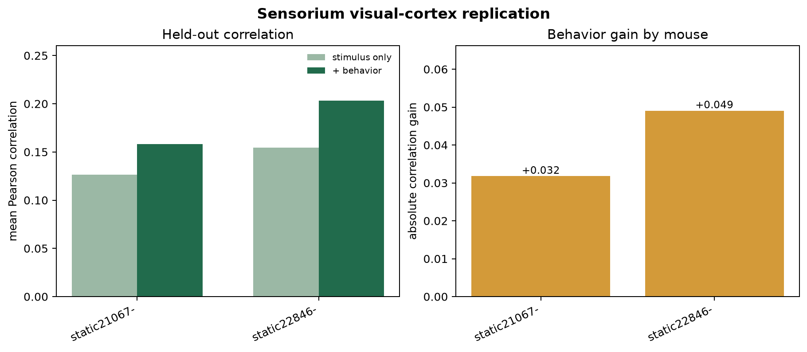

THE DESIGN
Four models, one held-out protocol
Each evaluated mouse uses the same 4×4 image downsampling, 150-component PCA, training-only standardization, ridge regression, and official tiers.
SENSORIUM 2022 · THREE-MOUSE REPLICATION
We compare a model that sees only the image with one that also knows the mouse’s pupil size and running speed.
THE DESIGN
Each evaluated mouse uses the same 4×4 image downsampling, 150-component PCA, training-only standardization, ridge regression, and official tiers.
REPORTED RESULT
The baseline predicts neural activity from the visual stimulus alone.
THREE-MOUSE REPLICATION
Original: 0.126 → 0.158
Second: 0.154 → 0.203
Third: 0.143 → 0.191
Running contributes differently across animals. These are predictive results, not causal evidence.
INTERPRETATION
Some variation that looks like noise to a stimulus-only model is related to internal state. Descriptive bootstrap intervals are within-animal, not population confidence intervals.
Inspect the repository ↗REPLICATION FIGURE

TRY THE COUNTERFACTUAL
This slider is a communication aid, not a new statistical result. It interpolates between the original mouse’s two reported scores.